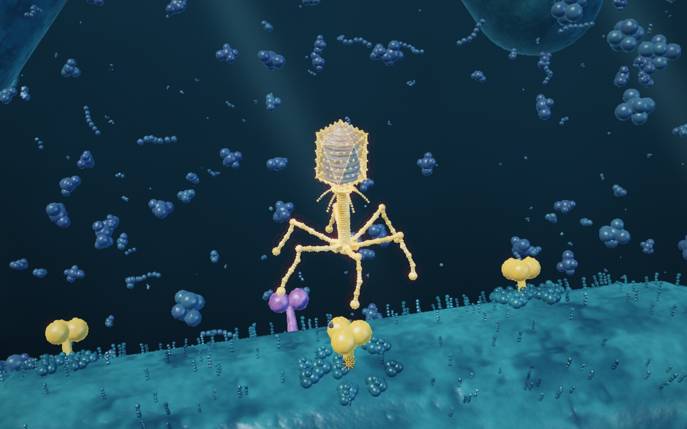
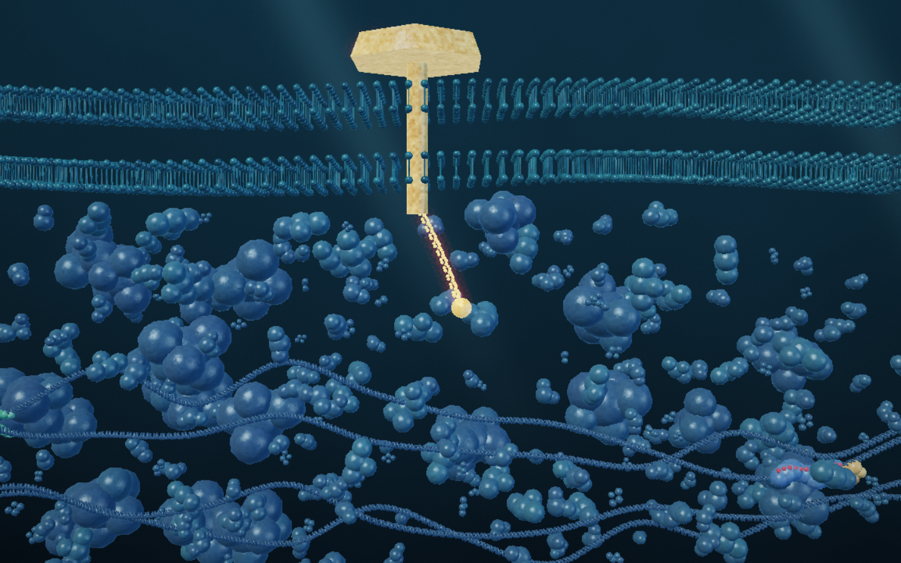
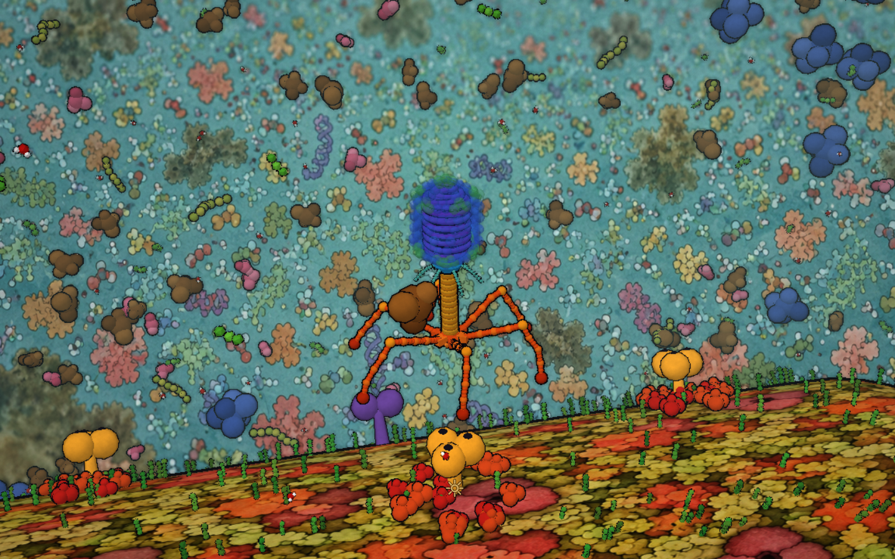

Phage: the first real-time false-light pass.
31 October 2026 · Experiment on codex/phage-false-light-preview · Awaiting visual validation; not merged into main.
These are browser screenshots of the running game renderer, with the simulation frozen and interface hidden for the exterior comparison. They are not generated concept art or image backdrops.


Matched exterior comparison

What the experiment changes
Continuous three-dimensional lighting replaces the flat ink treatment. Procedural surface normals and higher-resolution host geometry add membrane relief. HDR emission and a filmic display transform carry the warm phage and DNA light; protein surfaces use cool fill light and thin-edge scattering. Distant cells and suspended particles give the water depth. The interior adds molecular bilayer geometry. There is no narrow focal slice or heavy macro blur.
The surface geometry remains coarser than the generated target references. This first pass establishes the materials, palette and lighting in the playable scene; it is ready for visual review rather than a claim of final reference fidelity.
Try and compare
On this branch, the prototype and game shell default to False-light microscopy. D-pad left/right cycles through false light, Goodsell, cryo-EM and fluorescence; the prototype’s Features panel also selects the look. Branch settings use a separate storage key. The movement, protein grab, injection and inside-cell gameplay remain the same.
Exterior and interior captures are saved directly from Chrome at 1440 × 900. Gameplay and shader checks are recorded in the prototype README. This branch changes no title-sequence images and implements no super-gene powers.